Le logiciel de CAO / DAO des assistants à maitrise d’ouvrage le plus intuitif et productif
DR permet aux maîtres d’ouvrages, bureaux d’études et assistants à maîtrise d’ouvrage de créer et d’analyser les données des infrastructures de génie civil directement sur le terrain.
Modéliser les désordres de génie civil sur vos dessins 2D
Productivité et DAO
Gagnez en productivité lors des inspections et diagnostic de structure grâce à DR, l’application de dessin assisté par ordinateur (DAO) et de conception faite pour relever des désordres et prendre des notes sur le terrain. Mettez dans les mains de vos équipes une solution avec des fonctionnalités simples et ergonomiques qui leur permettra de se concentrer sur l’ingénierie.
Logiciel complet de collaboration
Liez le bureau au chantier grâce à des relevés propres qui sont lisibles par l’ensemble de vos collaborateurs. Vous pourrez mettre en place des processus au sein de vos équipes de dessin assisté par ordinateur. Ils pourront ainsi collaborer et se partager les tâches facilement. Finis les problèmes de relecture et de perte de données. Les plannings sont plus flexibles et la gestion des ressources de votre entreprise s’améliore. Vos clients sont satisfaits car vous respectez les délais de vos missions d’assistance.
Qualité des plans
Vos clients sont satisfaits car vous améliorez la qualité et l’uniformité des livrables CAO / DAO de vos missions et projets de diagnostics d’ouvrages de génie civil. Les documents techniques de votre entreprise sont beaux et mettent en valeur la qualité du travail de conception et d’analyse de vos équipes.
Le logiciel DR permet à vos équipes de gagner en efficacité.
Demander une démonstrationFonctionnalités du logiciel CAO
CAO / DAO : Visualisez, naviguez et éditez les plans
Lors d’une inspection ou d’un diagnostic structurel, utiliser les plans papiers de vos ouvrages n’est parfois pas pratique. On doit imprimer les plans avant l’inspection, on perd du temps à tourner les pages, les relevés ne sont pas lisibles ce qui rend la phase de dessin assistée par ordinateur laborieuse, …
Avec le logiciel Diagnostic Rapid, uploadez simplement vos dessins et visualisez le modèle 2D de l’ouvrage dans sa globalité sur tablette ou mobile et en mode Hors Ligne. Vous pouvez créer l’ensemble des objets dont vous avez besoin pour modéliser les désordres.
Ergonomie : Une interface utilisateur faite par des inspecteurs d’ouvrage
Nous avons testé plusieurs logiciels de conception assistée par ordinateur (CAO / DAO) sur mobile pour nous rendre compte que leurs interfaces utilisateurs ne sont pas adaptées au travail d’inspection et de diagnostic de structure. Les opérations souhaitées sont difficilement accessibles ou pas disponibles. Et finalement, il est plus rapide d’annoter les désordres constatés sur le papier et de mettre en forme le modèle 2D et le rapport au bureau.
DR propose les fonctionnalités dont les AMO et BET ont besoin lors de la mise en œuvre de leur projet d’inspection d’ouvrage de génie civil, accessible dans une interface utilisateur ergonomique et pensée pour le terrain.
Légendes complètes et personnalisées
Les entreprises d’assistance à maitrise d’ouvrage (AMO) ou les bureaux d’études techniques (BET) spécialisés dans la réparation d’ouvrage ont en générale une légende d’entreprise ou imposée par leur client qui standardise la manière d’annoter les dessins 2D dans leur logiciel de CAO / DAO.
Avec DR, la légende de vos plans est paramétrée et vous pouvez personnaliser des outils de conception de manière à gagner du temps et de la productivité sur le terrain.

Suivi de l’évolution des désordres
Les ouvrages de génie civil ont une durée de vie longue. L’apparition et l’évolution des désordres de la structure peut être rapide ou s’étendre sur plusieurs années. Il est primordial pour les maîtres d’ouvrage, AMO et BET de suivre l’évolution des désordres avec finesse.
Lors des inspections, une grande partie du travail de l’inspecteur est de suivre les évolutions des désordres existants. La modélisation en CAO / DAO au bureau est ensuite longue et il est difficile de dessiner avec précision la longueur ou la surface impactée par le désordre avec une photo et un croquis sur papier.
DR propose des outils de conception (CAO) spécifiques dans une interface utilisateur ergonomique qui permet d’annoter les anciens désordres rapidement.
Utilisez la solution de cao DR facilement
Contrairement aux autres logiciels de CAO, l’interface utilisateur est simple et ne contient que les outils dont vous avez besoin. La prise en main par vos équipes d’inspection sera rapide.
Créez un compte et laissez vous guider par le processus d’onboarding.
Créer un compteInsertion de blocs dans vos dessins 2D
Faites glisser le stylet sur le modèle et insérez des Blocs dans vos plans.
Les Blocs utilisés par les équipes de dessin assisté par ordinateur sont en général standardisés et répétitifs. Ils sont très utiles pour gagner en productivité et permettent de modéliser des dessins 2D récurrents très rapidement en CAO / DAO.
Avec la solution DR, ils sont directement accessibles depuis l’interface. Les utilisateurs peuvent les insérer en les glissant sur le dessin 2D. Il est possible de paramétrer leurs propriétés dans la légende. Ainsi, ils sont directement dans le bon calque, avec la bonne épaisseur de trait, etc…
Plusieurs centaines d’inspections réalisées avec DR
En savoir plusDes abréviations pour annoter les désordres
Les abréviations sont un moyen simple, rapide et partagé par l’ensemble des équipes d’inspecteur et de dessin assisté par ordinateur pour annoter un désordre.
Les textes manuscrits sont difficiles à lire. C’est en partie ce problème qui empêche la répartition du travail entre les équipes qui ont inspecté l’ouvrage et les autres membres du service ou de l’entreprise. Cela pose de réels problèmes de planning et de ressources dans les services de génie civil.
Contrairement aux notes manuscrites, les abréviations insérées dans le modèle objet à l’aide de la fonctionnalité sont lisibles par tous les membres de votre équipe. Elles sont créées simplement avec le glisser-déposer.
Modélisation des désordres surfaciques
Créer des formes pour modéliser des surfaces impactées par un désordre (par exemple, pour représenter de l’humidité ou de la ségrégation du béton). Les formes sont créées dans le modèle avec les propriétés paramétrables de votre légende.
Utiliser la solution complète DR en 3 étapes :
1. Importer un fond de plan d’ouvrage
2. Relever les désordres sur le terrain
3. Partager votre dessin avec votre équipe CAO / DAO
Tester gratuitementUn logiciel cross-platform de dessin compatible avec des tablettes Android, IpadOS, Windows.
DR, l’application de conception assistée par ordinateur qui vous suit dans toutes vos inspections et permet de stocker et relever les données de vos ouvrages sur un support collaboratif.
DR, l’application de conception assistée par ordinateur qui vous suit dans toutes vos inspections et permet de stocker et relever les données de vos ouvrages sur un support collaboratif.
Tarifs
Basic
Pour tester le logiciel sur quelques ouvrages
Pro
Pour les bureaux d’études et les assistants à maîtrise d’ouvrage de petites tailles.
Enterprise
Pour les gros BET et AMO dans le domaine de la réparation et de l’entretien des structures
Service DAO / CAO sur mesure
Nous proposons également de vous assister dans vos projets DAO / CAO et la mise en forme de vos relevés de désordres. Les dessins sont finalisés et prêts à envoyer à vos partenaires.
- Des dessinateurs expérimentés dans les ouvrages et les pathologies de génie civil
- Utilisation de votre légende de dessin
- Tenue des délais
- Prix compétitifs
- Localisé en France
Parlez nous de votre besoin et nous vous proposerons un chiffrage adapté pour la réalisation des vos dessins 2D / 3D.
Demander une estimationVotre première inspection d’ouvrage gratuitement :
Les bureaux d’études techniques et les assistances à maîtrise d’ouvrage bénéficient d’un plan Basic gratuit pour démarrer qui inclut toutes les fonctionnalités CAO 2D dont vous avez besoin pour réaliser une inspection d’ouvrage de génie civil.
Questions fréquemment posées
DR est une solution complète de dessin assistée par ordinateur conçue pour les inspections et diagnostics de structure. Elle leur permet d’annoter les modèles 2D de leurs ouvrages de manière beaucoup plus simple et rapide qu’avec les autres solutions de CAO.
Le logiciel CAO est destiné aux maîtres d’ouvrage, bureaux d’études techniques et entreprises d’assistances à maîtrise d’ouvrage spécialisés dans la maintenance d’infrastructure de génie civil.
Nous faisons tout pour que l’interface utilisateur de l’application soit la plus intuitive possible. Nous mettons en place des aides pour que nos utilisateurs prennent en main les fonctionnalités de dessin assisté par ordinateur de l’application sur le terrain ou au bureau.
Un conseiller est également à votre service pour vous aider et répondre à vos questions si besoin.
Nous contacter